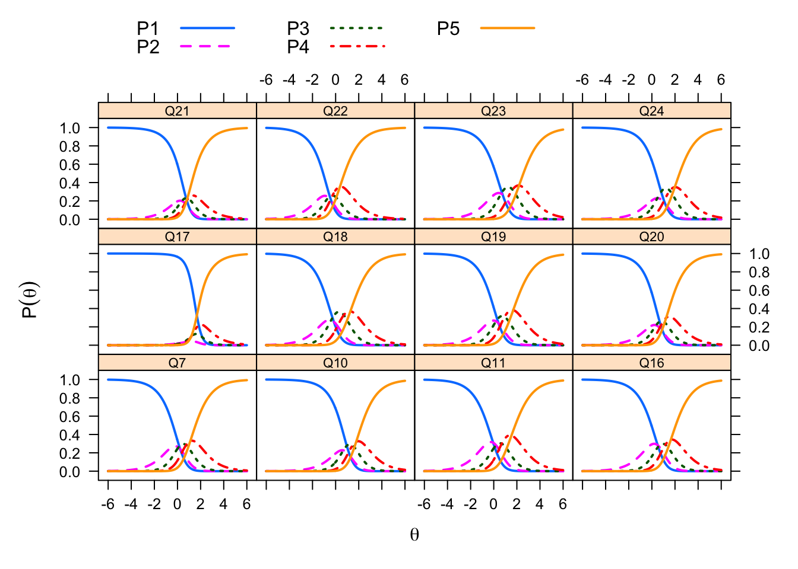
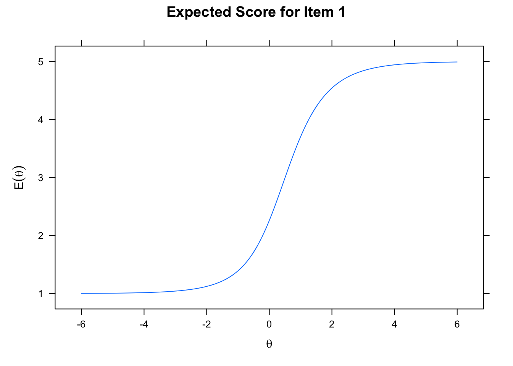
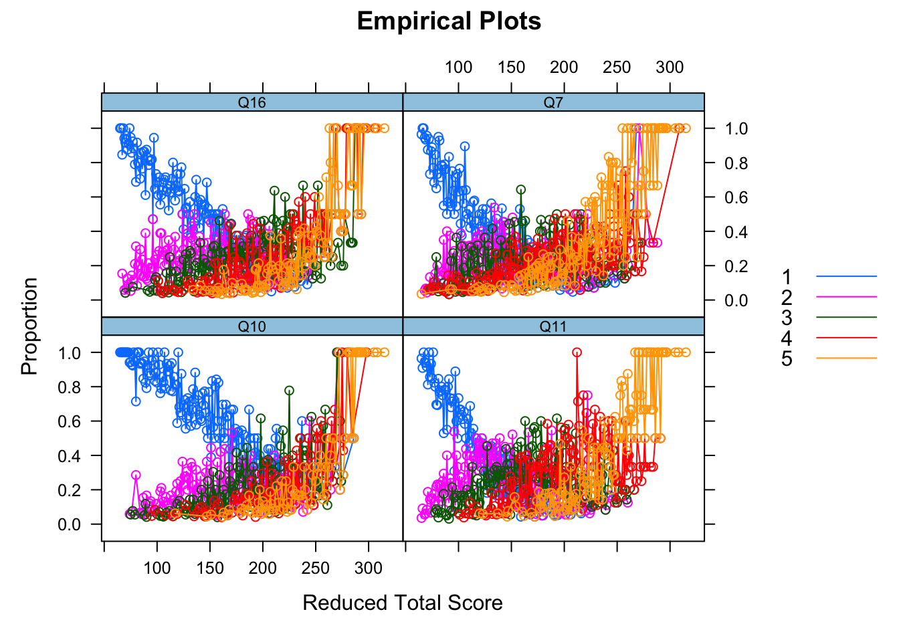
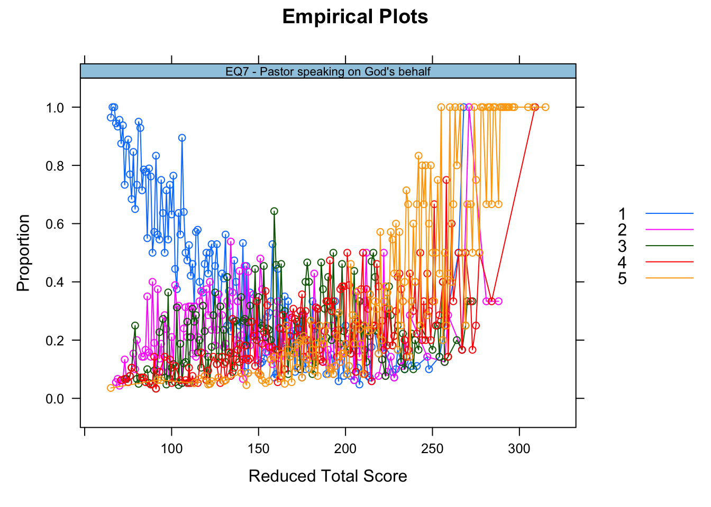
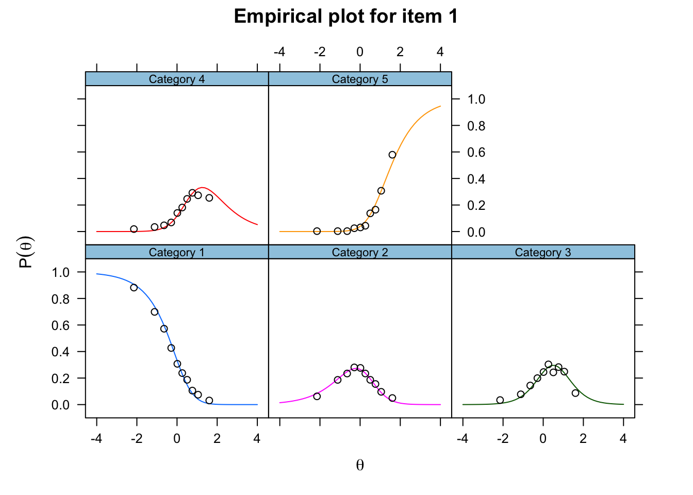
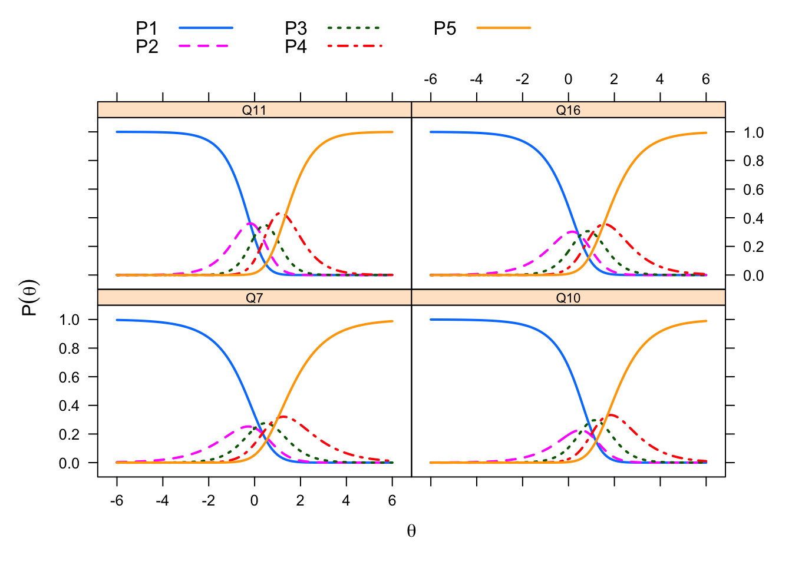
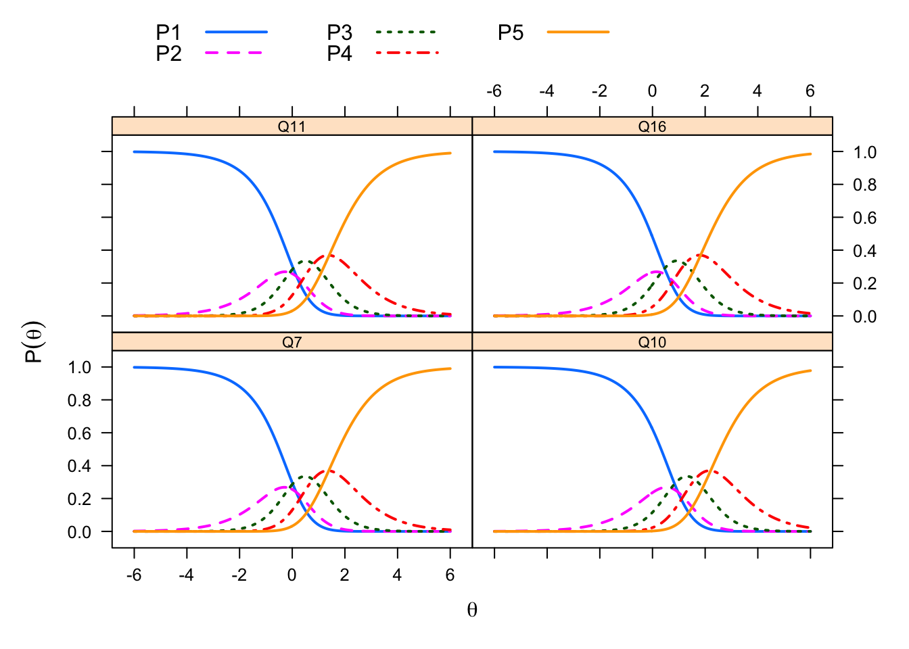
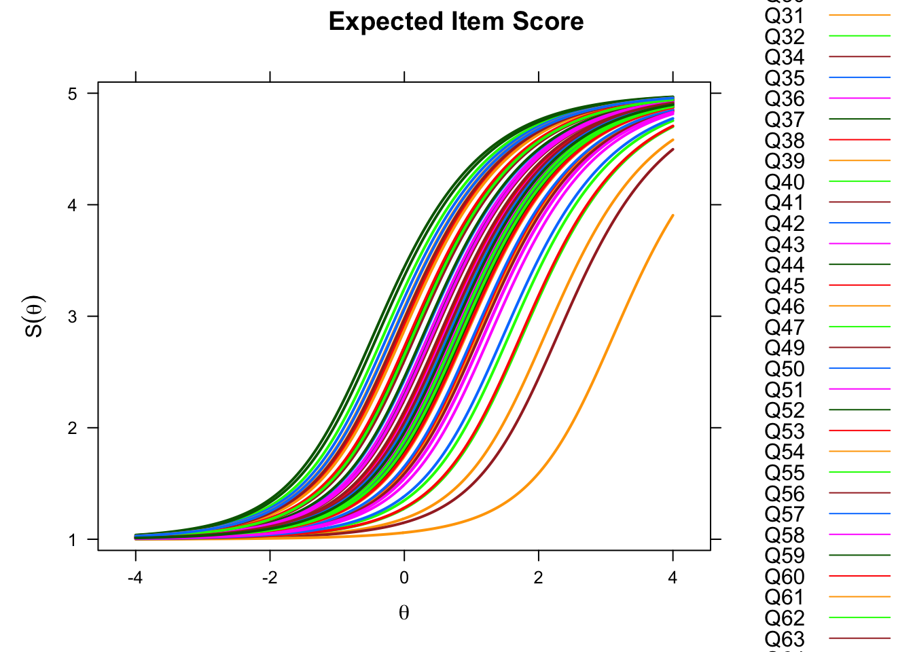
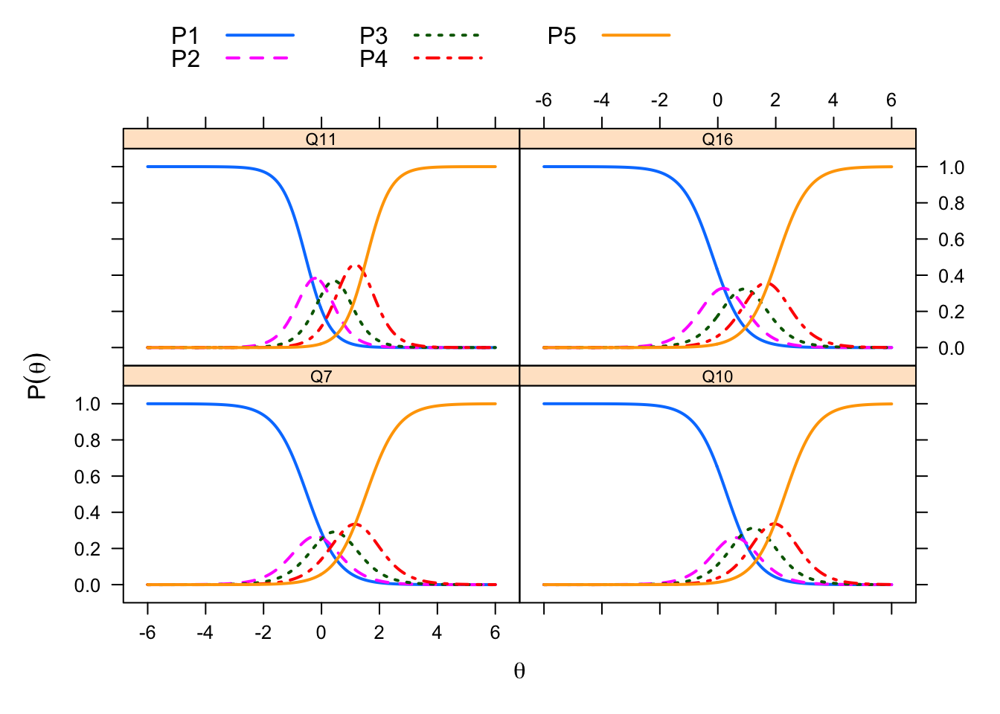
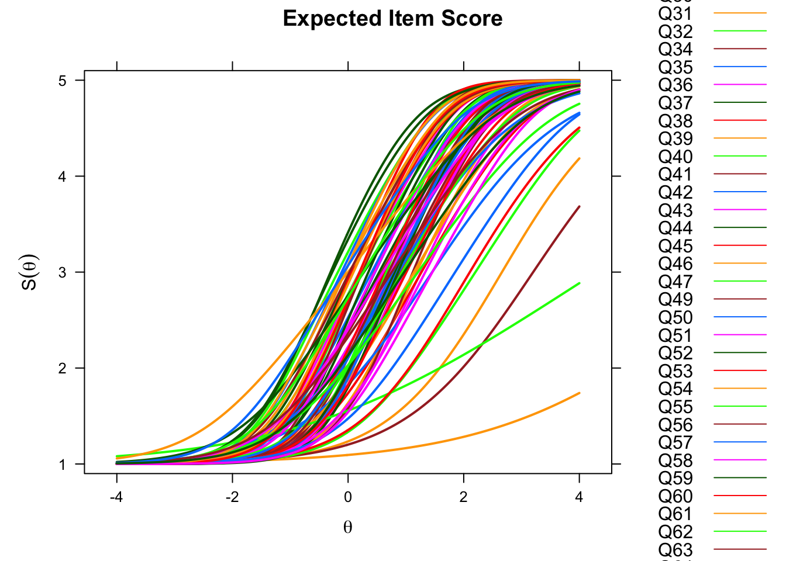

Item Analysis
In this chapter, we examine the technical quality of the items that Dan piloted for the SHAS. Here we address questions like the following:
- Which items, if any, are too “easy”? What is the impact of this?
- Which items, if any, are too “difficult”? What is the impact of this?
- Which items, if any, correlate weakly with others (and therefore might need to be refined or excluded from scaling?
- Which items, if any, have too many response categories which might be profitably collapsed?
We begin by defining item analysis and discussing its importance. Then we document our item analyses from an item response theory (IRT) framework. We conclude by summarizing what we learn from these analyses to help us refine these 66 items and possibly develop better ones in the future.
Item analyses in item response theory
Item response theory (IRT) is an established framework for empirically evaluating what items measure (Embretson and Reise 2000; Wright and Masters 1982). IRT methods complement methods derived from classical test theory in several ways.
Examinees and items on the same equal-interval scale. In classical test theory, examinees differ in their scores and items differ in their means or percent of examinees selecting a response; examinees and items are on different scales. By contrast, IRT methods allow measurement of persons and items on the same scale with equal interval properties of the logit scale** and resulting linear measures (Wright & Stone, 1999). In IRT we can estimate item parameters independently of the characteristics of the calibrating sample, and we can estimate person parameters apart from the difficulties of the items taken (Masters, 1982; Rasch, 1966).
Item separation has diagnostic value. A core assumption of CTT is that items are redundant; they contribute meaningful variation to a total score but they do not occupy a distinct place on the score continuum. IRT is different. IRT does not assume that items are redundant; instead it investigates whether items make distinct contributions to the measurement of the latent trait.
Whereas classical test theory measurement is principally concerned with the ratio of noise to signal in the variation contributed by an item, IRT models compute the probability of a certain response to an item given the level of the latent construct the individual possesses (i.e., spiritual abuse) and the relevant item’s difficulty of endorsement. IRT is based on the logistic model and operates on the logit scale.
In what follows, we conduct item analyses through a comparison of several different IRT models: the Partial Credit Model (PCM), the Generalized Partial Credit Model (GPCM), and the Rating Scale Model (RSM). I credit Okan Bulut (Bulut2020?) for his excellent tutorial illustrating how to carry out IRT analyses in R using the mirt package (cite mirt).
IRT Model Assumptions
IRT makes two assumptions of the data. The first is unidimensionality of the latent trait. Is the trait one dimension? This is important for the SHAS because the questionnaire explicitly distinguished between items measuring external events and internal states. To check this assumption we first confirm the factor structure using confirmatory factor analysis (CFA) and Rasch Principal Component Analysis of Residuals (PCAR; Smith, 2002).
The second assumption is local independence (Embretson and Reise 2000). This means that any set of items should not share any meaningful correlation once the latent variable has been accounted for (Edwards, Houts, & Cai, 2018).
To check the assumption of local independence, we used the Q3 statistic (Yen, 1984). The Q3 statistic index criteria are that the raw residual correlation between pairs of items should never exceed 0.10 (Marais & Andrich, 2008).
Using these criteria, we found XX items having local dependence. The items that had the highest raw residual correlations had negative signs and no positive residual correlation. In other words, the assumption of local independence in this study was met.
Partial Credit Model (PCM)
The first model we examine is the Partial Credit Model (PCM) (Masters1982?). This is a polytomous item response model belonging to the Rasch family. This means that it extends the Rasch model, which is based on dichotomous item responses (1=correct response, 0=incorrect response), by considering the probabliity of choosing from among several response options such as those typically presented in Likert scales of agreement or frequency. The PCM assumes that items use ordered response categories as they exist in questionnaires, such as unidimensional rating scales. The number of response categories in each item may vary (Embretson and Reise 2000). It follows that the PCM contains m (m + 1 being the number of response categories) threshold parameters. Each threshold parameter marks a category intersection (Masters1982?). Threshold sometimes refers to “step difficulty” or “step parameter” and illustrates the point on the latent trait continuum (e.g., spiritual abuse) where a response in category k becomes more likely than a response in category k – 1 (de Ayala, 2009). The PCM provides scores for items, persons, and step parameters on a logit scale.
Model Estimation. We begin by loading the mirt library and estimating the model on the data from the 66 SHAS items. This model constrains the slopes to 1 and freely estimates the variance parameters.
# ESTIMATE MIRT MODEL
library(mirt)
items <- read.csv("data/items.csv")
model.pcm <- "SPIRITUAL ABUSE = 1-66"
results.pcm <- mirt(data = items, model = model.pcm, itemtype = "Rasch",
verbose = FALSE)coef.pcm <- coef(results.pcm, IRTpars = TRUE, simplify = TRUE)
items.pcm <- as.data.frame(coef.pcm$items)
# print(results.pcm)
knitr::kable(round(items.pcm, 2), caption = "Partial Credit Model (PCM) - Item Parameters")| a | b1 | b2 | b3 | b4 | |
|---|---|---|---|---|---|
| Q7 | 1 | 0.23 | 0.08 | 0.74 | 1.11 |
| Q10 | 1 | 1.26 | 0.67 | 1.47 | 1.78 |
| Q11 | 1 | -0.05 | 0.20 | 0.69 | 1.53 |
| Q16 | 1 | 0.50 | 0.59 | 1.17 | 1.64 |
| Q17 | 1 | 3.93 | 0.39 | 1.20 | 1.18 |
| Q18 | 1 | -0.15 | -0.39 | 0.71 | 1.28 |
| Q19 | 1 | 0.42 | 0.20 | 0.94 | 1.69 |
| Q20 | 1 | 0.97 | 0.37 | 0.99 | 1.24 |
| Q21 | 1 | 1.11 | 0.38 | 0.93 | 0.78 |
| Q22 | 1 | -0.39 | -0.61 | -0.27 | 0.38 |
| Q23 | 1 | 0.77 | 0.64 | 1.62 | 2.19 |
| Q24 | 1 | 1.13 | 0.47 | 1.55 | 1.98 |
| Q25 | 1 | -0.95 | -0.81 | 0.18 | 1.08 |
| Q26 | 1 | 1.41 | 0.74 | 1.03 | 1.55 |
| Q27 | 1 | 1.64 | 0.36 | 1.09 | 1.20 |
| Q28 | 1 | 0.08 | 0.51 | 1.07 | 1.89 |
| Q29 | 1 | 0.12 | 0.04 | 0.88 | 1.58 |
| Q30 | 1 | 0.89 | 0.38 | 1.23 | 1.92 |
| Q31 | 1 | 0.51 | 0.64 | 1.49 | 1.88 |
| Q32 | 1 | -0.30 | -0.53 | 0.69 | 1.53 |
| Q34 | 1 | 0.10 | 0.04 | 0.94 | 1.57 |
| Q35 | 1 | -0.62 | -0.70 | 0.29 | 0.82 |
| Q36 | 1 | -0.47 | -0.24 | 0.60 | 1.43 |
| Q37 | 1 | -0.54 | -0.44 | 0.49 | 1.06 |
| Q38 | 1 | -0.43 | -0.49 | 0.52 | 0.92 |
| Q39 | 1 | -0.16 | -0.62 | 0.29 | 0.65 |
| Q40 | 1 | 0.66 | 0.21 | 1.09 | 1.17 |
| Q41 | 1 | 3.89 | 0.65 | 1.48 | 1.10 |
| Q42 | 1 | -0.59 | 0.03 | 0.95 | 1.75 |
| Q43 | 1 | 0.50 | 0.57 | 1.46 | 2.04 |
| Q44 | 1 | -0.01 | -0.17 | 0.70 | 1.57 |
| Q45 | 1 | -0.10 | -0.12 | 0.57 | 0.92 |
| Q46 | 1 | 3.92 | 1.19 | 2.64 | 2.40 |
| Q47 | 1 | 1.56 | 1.29 | 2.47 | 2.21 |
| Q49 | 1 | 0.42 | 0.57 | 1.22 | 1.90 |
| Q50 | 1 | 1.58 | -0.24 | 0.78 | 1.15 |
| Q51 | 1 | 0.44 | 0.33 | 0.82 | 1.42 |
| Q52 | 1 | 0.73 | 0.54 | 1.06 | 1.93 |
| Q53 | 1 | 0.36 | 0.17 | 1.00 | 1.43 |
| Q54 | 1 | -0.36 | -0.48 | 0.54 | 0.97 |
| Q55 | 1 | 1.34 | 1.18 | 2.00 | 2.39 |
| Q56 | 1 | -0.18 | -0.24 | 0.56 | 1.47 |
| Q57 | 1 | 0.83 | 0.33 | 1.04 | 1.56 |
| Q58 | 1 | 0.04 | -0.13 | 0.97 | 1.45 |
| Q59 | 1 | 0.38 | 0.42 | 1.21 | 2.07 |
| Q60 | 1 | 2.21 | 0.95 | 1.46 | 2.19 |
| Q61 | 1 | 0.05 | -0.24 | 0.49 | 0.93 |
| Q62 | 1 | 0.54 | 0.20 | 1.38 | 1.96 |
| Q63 | 1 | 0.05 | 0.33 | 1.19 | 1.85 |
| Q64 | 1 | 0.19 | 0.45 | 1.18 | 1.63 |
| Q65 | 1 | 1.22 | 0.78 | 1.39 | 1.82 |
| Q66 | 1 | -0.58 | -0.87 | 0.01 | 0.70 |
| Q68 | 1 | 0.86 | 0.31 | 1.34 | 2.02 |
| Q69 | 1 | -1.35 | -0.69 | 0.73 | 1.45 |
| Q70 | 1 | 0.32 | 0.51 | 1.59 | 1.84 |
| Q71 | 1 | -0.69 | -0.48 | 0.48 | 1.00 |
| Q72 | 1 | 1.36 | 0.89 | 2.14 | 2.15 |
| Q73 | 1 | -0.07 | 0.02 | 1.05 | 1.54 |
| Q74 | 1 | -0.51 | -0.40 | 0.75 | 1.55 |
| Q76 | 1 | -0.02 | -0.19 | 0.52 | 0.75 |
| Q77 | 1 | -1.09 | -0.58 | 0.32 | 1.34 |
| Q78 | 1 | -0.53 | -0.32 | 0.73 | 1.55 |
| Q79 | 1 | -0.05 | 0.14 | 1.34 | 1.49 |
| Q80 | 1 | -1.19 | -0.71 | 0.41 | 1.55 |
| Q81 | 1 | 0.94 | 0.86 | 1.98 | 2.33 |
| Q82 | 1 | 0.18 | 0.23 | 1.56 | 1.79 |
Item parameters. Table 1 reports the item parameters estimated by the PCM. The first column shows the discrimination parameter, which is equal to “1” for all items because the Partial Credit Model, similar to the Rasch model, constrains the discrimination parameter to be “1”. In the following columns (b1 to b4) are the estimated thresholds or step parameters. Because the SHAS items all have five response categories, the Partial Credit Model estimates four threshold parameters (b1 to b4) for each item. The question here is the spread of the parameters across the range of the trait. In the PCM, “the property of ordered threshold parameters is not a requirement in the partial credit or generalized partial credit models” (Embretson and Reise 2000).
Consider the first item: Q7. The thresholds are as follows: b1=0.23, b2=0.08, b3=0.74, b4=1.11. The threshold for b1 is higher than b2. This means examinees who experienced more spiritual abuse overall were more likely to choose “Never” than “Once or twice” on this item.
Item fit. Two fit statistics assess the fit of an item to the PCM: the infit mean square (MNSQ) and the outfit mean square (MNSQ). The infit statistic places greater emphasis on unexpected responses that are close to the examinees and item location. The outfit is sensitive to unexpected responses that are far from the location (Bond and Fox 2015). The infit and outfit values identify potential unexpected response patterns. The expected value of infit or outfit for each item is 1.0, with a range of acceptable values ranging from 0.5 to 1.5. Values outside this boundary indicate a lack of fit between items and models.
itemfit(results.pcm, na.rm = TRUE, "infit") item outfit z.outfit infit z.infit
1 Q7 1.276 7.187 1.122 4.669
2 Q10 0.963 -0.671 0.988 -0.415
3 Q11 0.780 -7.399 0.799 -8.713
4 Q16 0.930 -1.824 0.939 -2.337
5 Q17 2.813 7.053 1.555 9.545
6 Q18 0.777 -7.906 0.804 -8.498
7 Q19 0.778 -6.464 0.836 -6.867
8 Q20 0.970 -0.618 1.014 0.513
9 Q21 1.203 3.704 1.043 1.575
10 Q22 1.104 2.990 1.099 3.596
11 Q23 0.941 -1.383 1.007 0.269
12 Q24 0.913 -1.766 0.936 -2.327
13 Q25 0.771 -9.221 0.791 -9.059
14 Q26 1.313 4.798 0.963 -1.247
15 Q27 2.671 17.851 1.502 15.055
16 Q28 0.848 -4.823 0.869 -5.376
17 Q29 1.014 0.428 1.026 1.060
18 Q30 0.848 -3.539 0.893 -4.155
19 Q31 1.012 0.318 1.006 0.216
20 Q32 0.882 -4.193 0.897 -4.308
21 Q34 1.119 3.474 1.102 3.963
22 Q35 0.976 -0.850 0.917 -3.397
23 Q36 0.792 -7.866 0.812 -8.212
24 Q37 0.845 -5.731 0.862 -5.881
25 Q38 0.680 -12.407 0.711 -13.043
26 Q39 0.994 -0.167 0.998 -0.085
27 Q40 0.788 -5.520 0.845 -6.321
28 Q41 6.705 15.057 1.534 8.204
29 Q42 0.763 -9.409 0.790 -9.222
30 Q43 0.748 -7.211 0.795 -8.281
31 Q44 0.715 -9.971 0.734 -11.859
32 Q45 0.978 -0.672 0.994 -0.251
33 Q46 3.223 8.213 1.392 4.076
34 Q47 0.986 -0.207 1.027 0.728
35 Q49 0.821 -5.079 0.865 -5.373
36 Q50 1.947 12.371 1.513 16.610
37 Q51 1.287 6.901 1.232 8.445
38 Q52 0.698 -7.911 0.759 -9.911
39 Q53 0.836 -4.767 0.896 -4.247
40 Q54 0.872 -4.519 0.866 -5.674
41 Q55 2.828 22.030 1.577 14.747
42 Q56 0.659 -12.674 0.687 -14.270
43 Q57 0.800 -4.843 0.896 -4.083
44 Q58 0.879 -3.921 0.920 -3.294
45 Q59 0.720 -8.510 0.778 -9.340
46 Q60 1.436 4.429 1.199 4.970
47 Q61 1.013 0.402 1.025 0.997
48 Q62 0.968 -0.821 1.037 1.426
49 Q63 0.722 -9.474 0.775 -9.632
50 Q64 0.900 -2.977 0.913 -3.471
51 Q65 1.183 3.247 1.051 1.715
52 Q66 1.013 0.443 0.984 -0.613
53 Q68 0.890 -2.575 0.959 -1.542
54 Q69 1.184 6.976 1.185 7.178
55 Q70 1.238 6.218 1.223 7.897
56 Q71 0.869 -4.950 0.891 -4.589
57 Q72 1.020 0.380 1.091 2.772
58 Q73 1.089 2.783 1.121 4.679
59 Q74 1.205 6.924 1.188 7.246
60 Q76 0.922 -2.415 0.925 -3.068
61 Q77 0.735 -11.202 0.745 -11.386
62 Q78 1.024 0.878 1.039 1.571
63 Q79 1.215 6.432 1.184 6.889
64 Q80 0.938 -2.471 0.946 -2.227
65 Q81 0.812 -4.346 0.909 -3.187
66 Q82 1.069 2.012 1.127 4.750As seen in the ??, XX items had infit and outfit statistics within an acceptable value (0.5 - 1.5). XX misfitting items were found and this means that XX items fit within the Rasch PCM. 1
Item plots. We can use also examine these item statistics visually. The following curves are called category response curves because they represent “the probability of an examinee (or survey respondent) responding in a particular category conditional on trait level” (Embretson and Reise 2000). In general, “the higher the slope parameters, the steeper the operating characteristic curves and the more narrow and peaked the category response curves, indicating that the response categories differentiate among trait levels fairly well” (Embretson and Reise 2000). Polytomous IRT models such as the Partial Credit Model have option characteristic curves (OCCs) which can be considered as an extension of item characteristic curves (ICCs) for polytomous items. Because the items have more than two response categories, OCCs have multiple curves in the same plot. Each curve represents the probability of selecting a particular response option as a function of the latent trait.
# PCM ITEM PLOTS itemplot(results.pcm, 1, type='infotrace')
plot(results.pcm, type = "trace", which.items = c(1, 2, 3, 4,
5, 6, 7, 8, 9, 10, 11, 12), main = "", par.settings = simpleTheme(lty = 1:4,
lwd = 2), auto.key = list(points = FALSE, lines = TRUE, columns = 4)) # option curves
In Figure ??, each item has four OCCs representing the four response options. The response categories are labeled as “P1” to “P4”. For all four items, the OCCs follow the same order as the response categories. The OCC for the first response option (P1) is on the very left side of the plot, whereas the last response option (P4) is located on the right side of the plot. There are two questions to ask of OCCs: (1) Are they in the correct order? and (2) Does each response category meaningfully represent the responses of respondents at a given trait level? In this case, the OCCs are in the correct order, but the middle categories do not seem to capture distinct respondents.
Model fit. One way to evaluate the fit of the Partial Credit Model is to evaluate how well it fits the data from the item responses. The following table presents this information.
# PCM MODEL FIT
itemplot(results.pcm, 1, type = "score")
empirical_plot(items, c(1, 2, 3, 4), main = "Empirical Plots") # multiple items
empirical_plot(items, 1, main = "Empirical Plots") # one item
pcmfit <- as.data.frame(itemfit(results.pcm, na.rm = TRUE))
print(pcmfit, caption = "Partial Credit Model (PCM) - Item Fit Statistics") item S_X2 df.S_X2 RMSEA.S_X2 p.S_X2
1 Q7 533.3564 533 0.0004738806 4.875015e-01
2 Q10 495.1835 467 0.0045017043 1.772288e-01
3 Q11 579.6394 531 0.0055460592 7.083978e-02
4 Q16 481.6413 503 0.0000000000 7.460408e-01
5 Q17 443.3413 213 0.0190560901 2.710678e-18
6 Q18 511.1011 523 0.0000000000 6.368612e-01
7 Q19 548.8232 517 0.0045463620 1.609217e-01
8 Q20 543.2461 513 0.0044495252 1.718095e-01
9 Q21 556.8474 518 0.0050182679 1.153414e-01
10 Q22 610.6849 477 0.0097010700 3.161075e-05
11 Q23 451.2542 440 0.0029306759 3.450871e-01
12 Q24 439.9162 449 0.0000000000 6.113781e-01
13 Q25 505.6217 492 0.0030490903 3.258128e-01
14 Q26 481.9682 475 0.0022194765 4.026140e-01
15 Q27 896.8917 479 0.0171159793 9.180280e-28
16 Q28 514.6797 500 0.0031398698 3.153365e-01
17 Q29 530.1984 524 0.0019930273 4.163283e-01
18 Q30 569.1584 488 0.0074729914 6.434023e-03
19 Q31 526.1497 479 0.0057492248 6.714310e-02
20 Q32 486.5294 515 0.0000000000 8.114182e-01
21 Q34 586.1511 525 0.0062540338 3.296610e-02
22 Q35 542.2495 508 0.0047580948 1.418454e-01
23 Q36 553.8355 515 0.0050320936 1.147646e-01
24 Q37 548.0106 519 0.0043324357 1.827871e-01
25 Q38 568.9640 517 0.0058095664 5.643818e-02
26 Q39 473.9639 507 0.0000000000 8.507912e-01
27 Q40 573.7718 529 0.0053310428 8.694811e-02
28 Q41 435.2054 180 0.0218195764 3.605120e-23
29 Q42 549.9676 494 0.0061679751 4.106454e-02
30 Q43 502.6761 461 0.0055097377 8.770565e-02
31 Q44 618.0733 528 0.0075686550 4.042814e-03
32 Q45 548.4064 531 0.0033177605 2.915691e-01
33 Q46 249.0751 108 0.0209435812 3.719748e-13
34 Q47 347.5054 338 0.0030730106 3.490803e-01
35 Q49 515.8695 493 0.0039467760 2.301057e-01
36 Q50 1193.8223 508 0.0212917621 3.932729e-57
37 Q51 613.6675 527 0.0074312269 5.292971e-03
38 Q52 486.9722 493 0.0000000000 5.680840e-01
39 Q53 541.7427 523 0.0034689851 2.764940e-01
40 Q54 561.7842 518 0.0053275956 8.941954e-02
41 Q55 977.8732 373 0.0233354077 9.345000e-56
42 Q56 700.4023 524 0.0106322243 3.610390e-07
43 Q57 508.4694 507 0.0009865056 4.732781e-01
44 Q58 583.6834 531 0.0057720141 5.632886e-02
45 Q59 546.5812 477 0.0069988128 1.488867e-02
46 Q60 552.8959 347 0.0141155160 1.226614e-11
47 Q61 559.8063 528 0.0044975646 1.634943e-01
48 Q62 511.0822 489 0.0038940741 2.366890e-01
49 Q63 557.6752 505 0.0059182722 5.219718e-02
50 Q64 560.6293 508 0.0058981997 5.282423e-02
51 Q65 493.0967 466 0.0044187815 1.860160e-01
52 Q66 484.6288 486 0.0000000000 5.090283e-01
53 Q68 524.0797 483 0.0053441398 9.555432e-02
54 Q69 514.9555 493 0.0038671045 2.387767e-01
55 Q70 596.9121 469 0.0095698906 5.464063e-05
56 Q71 517.4845 517 0.0005609969 4.857223e-01
57 Q72 398.9107 382 0.0038555564 2.653161e-01
58 Q73 575.2774 521 0.0059146412 4.979387e-02
59 Q74 656.6494 501 0.0102139223 3.324529e-06
60 Q76 578.0990 526 0.0057671246 5.745455e-02
61 Q77 556.0596 489 0.0067859959 1.901382e-02
62 Q78 517.0659 518 0.0000000000 5.033200e-01
63 Q79 565.0319 517 0.0055854376 7.072720e-02
64 Q80 495.3246 488 0.0022450114 3.995138e-01
65 Q81 431.9793 407 0.0045397375 1.890289e-01
66 Q82 520.8786 480 0.0053476755 9.594222e-02knitr::kable(pcmfit, caption = "Partial Credit Model (PCM) - Item Fit Statistics")| item | S_X2 | df.S_X2 | RMSEA.S_X2 | p.S_X2 |
|---|---|---|---|---|
| Q7 | 533.3564 | 533 | 0.0004739 | 0.4875015 |
| Q10 | 495.1835 | 467 | 0.0045017 | 0.1772288 |
| Q11 | 579.6394 | 531 | 0.0055461 | 0.0708398 |
| Q16 | 481.6413 | 503 | 0.0000000 | 0.7460408 |
| Q17 | 443.3413 | 213 | 0.0190561 | 0.0000000 |
| Q18 | 511.1011 | 523 | 0.0000000 | 0.6368612 |
| Q19 | 548.8232 | 517 | 0.0045464 | 0.1609217 |
| Q20 | 543.2461 | 513 | 0.0044495 | 0.1718095 |
| Q21 | 556.8474 | 518 | 0.0050183 | 0.1153414 |
| Q22 | 610.6849 | 477 | 0.0097011 | 0.0000316 |
| Q23 | 451.2542 | 440 | 0.0029307 | 0.3450871 |
| Q24 | 439.9162 | 449 | 0.0000000 | 0.6113781 |
| Q25 | 505.6217 | 492 | 0.0030491 | 0.3258128 |
| Q26 | 481.9682 | 475 | 0.0022195 | 0.4026140 |
| Q27 | 896.8917 | 479 | 0.0171160 | 0.0000000 |
| Q28 | 514.6797 | 500 | 0.0031399 | 0.3153365 |
| Q29 | 530.1984 | 524 | 0.0019930 | 0.4163283 |
| Q30 | 569.1584 | 488 | 0.0074730 | 0.0064340 |
| Q31 | 526.1497 | 479 | 0.0057492 | 0.0671431 |
| Q32 | 486.5294 | 515 | 0.0000000 | 0.8114182 |
| Q34 | 586.1511 | 525 | 0.0062540 | 0.0329661 |
| Q35 | 542.2495 | 508 | 0.0047581 | 0.1418454 |
| Q36 | 553.8355 | 515 | 0.0050321 | 0.1147646 |
| Q37 | 548.0106 | 519 | 0.0043324 | 0.1827871 |
| Q38 | 568.9640 | 517 | 0.0058096 | 0.0564382 |
| Q39 | 473.9639 | 507 | 0.0000000 | 0.8507912 |
| Q40 | 573.7718 | 529 | 0.0053310 | 0.0869481 |
| Q41 | 435.2054 | 180 | 0.0218196 | 0.0000000 |
| Q42 | 549.9676 | 494 | 0.0061680 | 0.0410645 |
| Q43 | 502.6761 | 461 | 0.0055097 | 0.0877056 |
| Q44 | 618.0733 | 528 | 0.0075687 | 0.0040428 |
| Q45 | 548.4064 | 531 | 0.0033178 | 0.2915691 |
| Q46 | 249.0751 | 108 | 0.0209436 | 0.0000000 |
| Q47 | 347.5054 | 338 | 0.0030730 | 0.3490803 |
| Q49 | 515.8695 | 493 | 0.0039468 | 0.2301057 |
| Q50 | 1193.8223 | 508 | 0.0212918 | 0.0000000 |
| Q51 | 613.6675 | 527 | 0.0074312 | 0.0052930 |
| Q52 | 486.9722 | 493 | 0.0000000 | 0.5680840 |
| Q53 | 541.7427 | 523 | 0.0034690 | 0.2764940 |
| Q54 | 561.7842 | 518 | 0.0053276 | 0.0894195 |
| Q55 | 977.8732 | 373 | 0.0233354 | 0.0000000 |
| Q56 | 700.4023 | 524 | 0.0106322 | 0.0000004 |
| Q57 | 508.4694 | 507 | 0.0009865 | 0.4732781 |
| Q58 | 583.6834 | 531 | 0.0057720 | 0.0563289 |
| Q59 | 546.5812 | 477 | 0.0069988 | 0.0148887 |
| Q60 | 552.8959 | 347 | 0.0141155 | 0.0000000 |
| Q61 | 559.8063 | 528 | 0.0044976 | 0.1634943 |
| Q62 | 511.0822 | 489 | 0.0038941 | 0.2366890 |
| Q63 | 557.6752 | 505 | 0.0059183 | 0.0521972 |
| Q64 | 560.6293 | 508 | 0.0058982 | 0.0528242 |
| Q65 | 493.0967 | 466 | 0.0044188 | 0.1860160 |
| Q66 | 484.6288 | 486 | 0.0000000 | 0.5090283 |
| Q68 | 524.0797 | 483 | 0.0053441 | 0.0955543 |
| Q69 | 514.9555 | 493 | 0.0038671 | 0.2387767 |
| Q70 | 596.9121 | 469 | 0.0095699 | 0.0000546 |
| Q71 | 517.4845 | 517 | 0.0005610 | 0.4857223 |
| Q72 | 398.9107 | 382 | 0.0038556 | 0.2653161 |
| Q73 | 575.2774 | 521 | 0.0059146 | 0.0497939 |
| Q74 | 656.6494 | 501 | 0.0102139 | 0.0000033 |
| Q76 | 578.0990 | 526 | 0.0057671 | 0.0574545 |
| Q77 | 556.0596 | 489 | 0.0067860 | 0.0190138 |
| Q78 | 517.0659 | 518 | 0.0000000 | 0.5033200 |
| Q79 | 565.0319 | 517 | 0.0055854 | 0.0707272 |
| Q80 | 495.3246 | 488 | 0.0022450 | 0.3995138 |
| Q81 | 431.9793 | 407 | 0.0045397 | 0.1890289 |
| Q82 | 520.8786 | 480 | 0.0053477 | 0.0959422 |
itemfit(results.pcm, empirical.plot = 1)
itemfit(results.pcm, "infit", na.rm = TRUE) item outfit z.outfit infit z.infit
1 Q7 1.276 7.187 1.122 4.669
2 Q10 0.963 -0.671 0.988 -0.415
3 Q11 0.780 -7.399 0.799 -8.713
4 Q16 0.930 -1.824 0.939 -2.337
5 Q17 2.813 7.053 1.555 9.545
6 Q18 0.777 -7.906 0.804 -8.498
7 Q19 0.778 -6.464 0.836 -6.867
8 Q20 0.970 -0.618 1.014 0.513
9 Q21 1.203 3.704 1.043 1.575
10 Q22 1.104 2.990 1.099 3.596
11 Q23 0.941 -1.383 1.007 0.269
12 Q24 0.913 -1.766 0.936 -2.327
13 Q25 0.771 -9.221 0.791 -9.059
14 Q26 1.313 4.798 0.963 -1.247
15 Q27 2.671 17.851 1.502 15.055
16 Q28 0.848 -4.823 0.869 -5.376
17 Q29 1.014 0.428 1.026 1.060
18 Q30 0.848 -3.539 0.893 -4.155
19 Q31 1.012 0.318 1.006 0.216
20 Q32 0.882 -4.193 0.897 -4.308
21 Q34 1.119 3.474 1.102 3.963
22 Q35 0.976 -0.850 0.917 -3.397
23 Q36 0.792 -7.866 0.812 -8.212
24 Q37 0.845 -5.731 0.862 -5.881
25 Q38 0.680 -12.407 0.711 -13.043
26 Q39 0.994 -0.167 0.998 -0.085
27 Q40 0.788 -5.520 0.845 -6.321
28 Q41 6.705 15.057 1.534 8.204
29 Q42 0.763 -9.409 0.790 -9.222
30 Q43 0.748 -7.211 0.795 -8.281
31 Q44 0.715 -9.971 0.734 -11.859
32 Q45 0.978 -0.672 0.994 -0.251
33 Q46 3.223 8.213 1.392 4.076
34 Q47 0.986 -0.207 1.027 0.728
35 Q49 0.821 -5.079 0.865 -5.373
36 Q50 1.947 12.371 1.513 16.610
37 Q51 1.287 6.901 1.232 8.445
38 Q52 0.698 -7.911 0.759 -9.911
39 Q53 0.836 -4.767 0.896 -4.247
40 Q54 0.872 -4.519 0.866 -5.674
41 Q55 2.828 22.030 1.577 14.747
42 Q56 0.659 -12.674 0.687 -14.270
43 Q57 0.800 -4.843 0.896 -4.083
44 Q58 0.879 -3.921 0.920 -3.294
45 Q59 0.720 -8.510 0.778 -9.340
46 Q60 1.436 4.429 1.199 4.970
47 Q61 1.013 0.402 1.025 0.997
48 Q62 0.968 -0.821 1.037 1.426
49 Q63 0.722 -9.474 0.775 -9.632
50 Q64 0.900 -2.977 0.913 -3.471
51 Q65 1.183 3.247 1.051 1.715
52 Q66 1.013 0.443 0.984 -0.613
53 Q68 0.890 -2.575 0.959 -1.542
54 Q69 1.184 6.976 1.185 7.178
55 Q70 1.238 6.218 1.223 7.897
56 Q71 0.869 -4.950 0.891 -4.589
57 Q72 1.020 0.380 1.091 2.772
58 Q73 1.089 2.783 1.121 4.679
59 Q74 1.205 6.924 1.188 7.246
60 Q76 0.922 -2.415 0.925 -3.068
61 Q77 0.735 -11.202 0.745 -11.386
62 Q78 1.024 0.878 1.039 1.571
63 Q79 1.215 6.432 1.184 6.889
64 Q80 0.938 -2.471 0.946 -2.227
65 Q81 0.812 -4.346 0.909 -3.187
66 Q82 1.069 2.012 1.127 4.750Table X “contains estimation results and the fit index model from each item of the SHAS.” The estimates of item difficulty were between -X.XX TO X.XX (ie., -1.36 to 1.51) on the logit scale. Based on the item discrimination index (PTBIS; point-biserial correlation), which is analogous to classical test theory (item to-total-correlation), X SHAS items have high discrimination values in a positive direction, with no values below 0.30 or negative values. This indicates that XX items function well to distinguish persons with high versus low levels of spiritual abuse. For each item, we examined the step parameter of category endorsements, and the statistics of each response for the items. X items, except item X, followed the step ordering requirement. We found Item X (Step 1 = -0.XX, Step 2 = -0.XX, Step 3 = 0.XX) experienced threshold disordering as the thresholds were not ordered from lowest to highest. However, none of the infit and outfit statistics for response categories were greater than 2. This finding indicated that collapsing categories was not necessary because the disordered threshold still fit and did not violate the Rasch model (Linacre, 2010; 2018). Based on this information, we concluded that, in general, the SHAS items (fit)/(did not fit) the Rasch PCM model.
Generalized Partial Credit Model (GPCM)
In the PCM, “the property of ordered threshold parameters is not a requirement in the partial credit or generalized partial credit models” (Embretson and Reise 2000).
# GENERALIZED PCM ESTIMATION
model.gpcm <- "SPIRITUAL ABUSE GPCM = 1-66"
results.gpcm <- mirt(data = items, model = model.gpcm, itemtype = "gpcm",
verbose = FALSE)
coef.gpcm <- coef(results.gpcm, IRTpars = TRUE, simplify = TRUE)
items.gpcm <- as.data.frame(coef.gpcm$items)
print(results.gpcm)
Call:
mirt(data = items, model = model.gpcm, itemtype = "gpcm", verbose = FALSE)
Full-information item factor analysis with 1 factor(s).
Converged within 1e-04 tolerance after 56 EM iterations.
mirt version: 1.36.1
M-step optimizer: BFGS
EM acceleration: Ramsay
Number of rectangular quadrature: 61
Latent density type: Gaussian
Log-likelihood = -234269.7
Estimated parameters: 330
AIC = 469199.3
BIC = 471205; SABIC = 470156.4# print(items.gpcm)
knitr::kable(round(items.gpcm, 2), caption = "Generalized Partial Credit Model (GPCM) - Item Parameters")| a | b1 | b2 | b3 | b4 | |
|---|---|---|---|---|---|
| Q7 | 0.89 | 0.36 | 0.02 | 0.67 | 1.01 |
| Q10 | 1.06 | 1.17 | 0.59 | 1.36 | 1.69 |
| Q11 | 1.51 | -0.19 | 0.16 | 0.62 | 1.35 |
| Q16 | 1.13 | 0.42 | 0.51 | 1.06 | 1.53 |
| Q17 | 0.43 | 8.66 | -0.52 | 0.82 | 0.34 |
| Q18 | 1.55 | -0.32 | -0.27 | 0.59 | 1.14 |
| Q19 | 1.44 | 0.18 | 0.19 | 0.82 | 1.49 |
| Q20 | 1.03 | 0.93 | 0.30 | 0.89 | 1.15 |
| Q21 | 0.97 | 1.14 | 0.31 | 0.84 | 0.68 |
| Q22 | 0.97 | -0.28 | -0.61 | -0.32 | 0.29 |
| Q23 | 1.05 | 0.71 | 0.56 | 1.51 | 2.09 |
| Q24 | 1.15 | 0.96 | 0.42 | 1.40 | 1.86 |
| Q25 | 1.57 | -0.95 | -0.64 | 0.16 | 0.95 |
| Q26 | 1.04 | 1.34 | 0.66 | 0.93 | 1.46 |
| Q27 | 0.47 | 3.54 | 0.04 | 1.09 | 0.93 |
| Q28 | 1.31 | -0.02 | 0.42 | 0.94 | 1.69 |
| Q29 | 1.01 | 0.14 | -0.01 | 0.80 | 1.49 |
| Q30 | 1.24 | 0.68 | 0.34 | 1.10 | 1.76 |
| Q31 | 1.01 | 0.51 | 0.56 | 1.39 | 1.80 |
| Q32 | 1.27 | -0.36 | -0.45 | 0.60 | 1.36 |
| Q34 | 0.91 | 0.19 | -0.03 | 0.87 | 1.51 |
| Q35 | 1.20 | -0.62 | -0.63 | 0.24 | 0.75 |
| Q36 | 1.44 | -0.53 | -0.20 | 0.52 | 1.25 |
| Q37 | 1.34 | -0.57 | -0.38 | 0.42 | 0.96 |
| Q38 | 1.75 | -0.57 | -0.35 | 0.42 | 0.87 |
| Q39 | 1.09 | -0.16 | -0.59 | 0.24 | 0.58 |
| Q40 | 1.39 | 0.39 | 0.20 | 0.94 | 1.11 |
| Q41 | 0.40 | 9.15 | -0.05 | 1.39 | -0.08 |
| Q42 | 1.59 | -0.61 | 0.03 | 0.79 | 1.49 |
| Q43 | 1.51 | 0.25 | 0.50 | 1.23 | 1.80 |
| Q44 | 1.73 | -0.24 | -0.08 | 0.61 | 1.34 |
| Q45 | 1.09 | -0.11 | -0.14 | 0.49 | 0.84 |
| Q46 | 0.35 | 10.37 | 0.96 | 4.11 | 2.47 |
| Q47 | 0.98 | 1.55 | 1.20 | 2.40 | 2.18 |
| Q49 | 1.35 | 0.24 | 0.48 | 1.07 | 1.71 |
| Q50 | 0.52 | 3.26 | -0.90 | 0.64 | 1.01 |
| Q51 | 0.77 | 0.70 | 0.27 | 0.74 | 1.37 |
| Q52 | 1.60 | 0.38 | 0.48 | 0.95 | 1.67 |
| Q53 | 1.24 | 0.22 | 0.14 | 0.88 | 1.32 |
| Q54 | 1.31 | -0.42 | -0.41 | 0.45 | 0.90 |
| Q55 | 0.33 | 3.94 | 1.89 | 3.39 | 3.68 |
| Q56 | 1.97 | -0.40 | -0.13 | 0.50 | 1.23 |
| Q57 | 1.25 | 0.61 | 0.29 | 0.93 | 1.44 |
| Q58 | 1.24 | -0.05 | -0.11 | 0.84 | 1.32 |
| Q59 | 1.62 | 0.12 | 0.38 | 1.03 | 1.77 |
| Q60 | 0.72 | 2.94 | 0.85 | 1.39 | 2.28 |
| Q61 | 1.06 | 0.05 | -0.26 | 0.42 | 0.85 |
| Q62 | 0.99 | 0.55 | 0.13 | 1.29 | 1.89 |
| Q63 | 1.64 | -0.13 | 0.29 | 0.99 | 1.60 |
| Q64 | 1.19 | 0.11 | 0.38 | 1.04 | 1.50 |
| Q65 | 0.93 | 1.28 | 0.70 | 1.30 | 1.76 |
| Q66 | 1.10 | -0.53 | -0.82 | -0.02 | 0.63 |
| Q68 | 1.13 | 0.73 | 0.26 | 1.21 | 1.88 |
| Q69 | 0.77 | -1.28 | -0.82 | 0.74 | 1.48 |
| Q70 | 0.72 | 0.56 | 0.44 | 1.72 | 1.90 |
| Q71 | 1.25 | -0.68 | -0.43 | 0.41 | 0.92 |
| Q72 | 0.88 | 1.50 | 0.81 | 2.15 | 2.14 |
| Q73 | 0.86 | 0.04 | -0.06 | 1.01 | 1.50 |
| Q74 | 0.79 | -0.35 | -0.53 | 0.71 | 1.58 |
| Q76 | 1.17 | -0.08 | -0.19 | 0.45 | 0.70 |
| Q77 | 1.65 | -1.03 | -0.46 | 0.29 | 1.14 |
| Q78 | 0.97 | -0.45 | -0.36 | 0.66 | 1.47 |
| Q79 | 0.78 | 0.11 | 0.04 | 1.40 | 1.46 |
| Q80 | 1.14 | -1.10 | -0.66 | 0.35 | 1.40 |
| Q81 | 1.25 | 0.73 | 0.76 | 1.75 | 2.16 |
| Q82 | 0.86 | 0.29 | 0.13 | 1.57 | 1.77 |
# OPTION CHARACTERISTIC CURVES
plot(results.gpcm, type = "trace", which.items = c(1, 2, 3, 4),
main = "", par.settings = simpleTheme(lty = 1:4, lwd = 2),
auto.key = list(points = FALSE, lines = TRUE, columns = 4)) # option curves
Item parameters.
Item plots.
Model fit.
Rating Scale Model (RSM)
model.rsm <- "SPIRITUAL ABUSE RSM = 1-66"
results.rsm <- mirt(data = items, model = model.rsm, itemtype = "rsm",
verbose = FALSE)
coef.rsm <- coef(results.rsm, simplify = TRUE)
items.rsm <- as.data.frame(coef.rsm$items)
print(summary(results.rsm)) SPIRITUALABUSERSM h2
Q7 0.526 0.277
Q10 0.526 0.277
Q11 0.526 0.277
Q16 0.526 0.277
Q17 0.526 0.277
Q18 0.526 0.277
Q19 0.526 0.277
Q20 0.526 0.277
Q21 0.526 0.277
Q22 0.526 0.277
Q23 0.526 0.277
Q24 0.526 0.277
Q25 0.526 0.277
Q26 0.526 0.277
Q27 0.526 0.277
Q28 0.526 0.277
Q29 0.526 0.277
Q30 0.526 0.277
Q31 0.526 0.277
Q32 0.526 0.277
Q34 0.526 0.277
Q35 0.526 0.277
Q36 0.526 0.277
Q37 0.526 0.277
Q38 0.526 0.277
Q39 0.526 0.277
Q40 0.526 0.277
Q41 0.526 0.277
Q42 0.526 0.277
Q43 0.526 0.277
Q44 0.526 0.277
Q45 0.526 0.277
Q46 0.526 0.277
Q47 0.526 0.277
Q49 0.526 0.277
Q50 0.526 0.277
Q51 0.526 0.277
Q52 0.526 0.277
Q53 0.526 0.277
Q54 0.526 0.277
Q55 0.526 0.277
Q56 0.526 0.277
Q57 0.526 0.277
Q58 0.526 0.277
Q59 0.526 0.277
Q60 0.526 0.277
Q61 0.526 0.277
Q62 0.526 0.277
Q63 0.526 0.277
Q64 0.526 0.277
Q65 0.526 0.277
Q66 0.526 0.277
Q68 0.526 0.277
Q69 0.526 0.277
Q70 0.526 0.277
Q71 0.526 0.277
Q72 0.526 0.277
Q73 0.526 0.277
Q74 0.526 0.277
Q76 0.526 0.277
Q77 0.526 0.277
Q78 0.526 0.277
Q79 0.526 0.277
Q80 0.526 0.277
Q81 0.526 0.277
Q82 0.526 0.277
SS loadings: 18.287
Proportion Var: 0.277
Factor correlations:
SPIRITUALABUSERSM
SPIRITUALABUSERSM 1
$rotF
SPIRITUALABUSERSM
Q7 0.526374
Q10 0.526374
Q11 0.526374
Q16 0.526374
Q17 0.526374
Q18 0.526374
Q19 0.526374
Q20 0.526374
Q21 0.526374
Q22 0.526374
Q23 0.526374
Q24 0.526374
Q25 0.526374
Q26 0.526374
Q27 0.526374
Q28 0.526374
Q29 0.526374
Q30 0.526374
Q31 0.526374
Q32 0.526374
Q34 0.526374
Q35 0.526374
Q36 0.526374
Q37 0.526374
Q38 0.526374
Q39 0.526374
Q40 0.526374
Q41 0.526374
Q42 0.526374
Q43 0.526374
Q44 0.526374
Q45 0.526374
Q46 0.526374
Q47 0.526374
Q49 0.526374
Q50 0.526374
Q51 0.526374
Q52 0.526374
Q53 0.526374
Q54 0.526374
Q55 0.526374
Q56 0.526374
Q57 0.526374
Q58 0.526374
Q59 0.526374
Q60 0.526374
Q61 0.526374
Q62 0.526374
Q63 0.526374
Q64 0.526374
Q65 0.526374
Q66 0.526374
Q68 0.526374
Q69 0.526374
Q70 0.526374
Q71 0.526374
Q72 0.526374
Q73 0.526374
Q74 0.526374
Q76 0.526374
Q77 0.526374
Q78 0.526374
Q79 0.526374
Q80 0.526374
Q81 0.526374
Q82 0.526374
$h2
h2
Q7 0.2770696
Q10 0.2770696
Q11 0.2770696
Q16 0.2770696
Q17 0.2770696
Q18 0.2770696
Q19 0.2770696
Q20 0.2770696
Q21 0.2770696
Q22 0.2770696
Q23 0.2770696
Q24 0.2770696
Q25 0.2770696
Q26 0.2770696
Q27 0.2770696
Q28 0.2770696
Q29 0.2770696
Q30 0.2770696
Q31 0.2770696
Q32 0.2770696
Q34 0.2770696
Q35 0.2770696
Q36 0.2770696
Q37 0.2770696
Q38 0.2770696
Q39 0.2770696
Q40 0.2770696
Q41 0.2770696
Q42 0.2770696
Q43 0.2770696
Q44 0.2770696
Q45 0.2770696
Q46 0.2770696
Q47 0.2770696
Q49 0.2770696
Q50 0.2770696
Q51 0.2770696
Q52 0.2770696
Q53 0.2770696
Q54 0.2770696
Q55 0.2770696
Q56 0.2770696
Q57 0.2770696
Q58 0.2770696
Q59 0.2770696
Q60 0.2770696
Q61 0.2770696
Q62 0.2770696
Q63 0.2770696
Q64 0.2770696
Q65 0.2770696
Q66 0.2770696
Q68 0.2770696
Q69 0.2770696
Q70 0.2770696
Q71 0.2770696
Q72 0.2770696
Q73 0.2770696
Q74 0.2770696
Q76 0.2770696
Q77 0.2770696
Q78 0.2770696
Q79 0.2770696
Q80 0.2770696
Q81 0.2770696
Q82 0.2770696
$fcor
SPIRITUALABUSERSM
SPIRITUALABUSERSM 1# print(items.rsm)
knitr::kable(round(items.rsm, 2), caption = "Rating Scale Model (RSM) - Item Parameters")| a1 | b1 | b2 | b3 | b4 | c | |
|---|---|---|---|---|---|---|
| Q7 | 1 | 0.15 | -0.11 | 0.79 | 1.39 | 0.00 |
| Q10 | 1 | 0.15 | -0.11 | 0.79 | 1.39 | -0.82 |
| Q11 | 1 | 0.15 | -0.11 | 0.79 | 1.39 | -0.02 |
| Q16 | 1 | 0.15 | -0.11 | 0.79 | 1.39 | -0.44 |
| Q17 | 1 | 0.15 | -0.11 | 0.79 | 1.39 | -1.73 |
| Q18 | 1 | 0.15 | -0.11 | 0.79 | 1.39 | 0.22 |
| Q19 | 1 | 0.15 | -0.11 | 0.79 | 1.39 | -0.23 |
| Q20 | 1 | 0.15 | -0.11 | 0.79 | 1.39 | -0.41 |
| Q21 | 1 | 0.15 | -0.11 | 0.79 | 1.39 | -0.36 |
| Q22 | 1 | 0.15 | -0.11 | 0.79 | 1.39 | 0.82 |
| Q23 | 1 | 0.15 | -0.11 | 0.79 | 1.39 | -0.70 |
| Q24 | 1 | 0.15 | -0.11 | 0.79 | 1.39 | -0.74 |
| Q25 | 1 | 0.15 | -0.11 | 0.79 | 1.39 | 0.67 |
| Q26 | 1 | 0.15 | -0.11 | 0.79 | 1.39 | -0.76 |
| Q27 | 1 | 0.15 | -0.11 | 0.79 | 1.39 | -0.67 |
| Q28 | 1 | 0.15 | -0.11 | 0.79 | 1.39 | -0.29 |
| Q29 | 1 | 0.15 | -0.11 | 0.79 | 1.39 | -0.07 |
| Q30 | 1 | 0.15 | -0.11 | 0.79 | 1.39 | -0.54 |
| Q31 | 1 | 0.15 | -0.11 | 0.79 | 1.39 | -0.56 |
| Q32 | 1 | 0.15 | -0.11 | 0.79 | 1.39 | 0.26 |
| Q34 | 1 | 0.15 | -0.11 | 0.79 | 1.39 | -0.08 |
| Q35 | 1 | 0.15 | -0.11 | 0.79 | 1.39 | 0.61 |
| Q36 | 1 | 0.15 | -0.11 | 0.79 | 1.39 | 0.25 |
| Q37 | 1 | 0.15 | -0.11 | 0.79 | 1.39 | 0.42 |
| Q38 | 1 | 0.15 | -0.11 | 0.79 | 1.39 | 0.43 |
| Q39 | 1 | 0.15 | -0.11 | 0.79 | 1.39 | 0.53 |
| Q40 | 1 | 0.15 | -0.11 | 0.79 | 1.39 | -0.27 |
| Q41 | 1 | 0.15 | -0.11 | 0.79 | 1.39 | -1.92 |
| Q42 | 1 | 0.15 | -0.11 | 0.79 | 1.39 | 0.06 |
| Q43 | 1 | 0.15 | -0.11 | 0.79 | 1.39 | -0.54 |
| Q44 | 1 | 0.15 | -0.11 | 0.79 | 1.39 | 0.08 |
| Q45 | 1 | 0.15 | -0.11 | 0.79 | 1.39 | 0.23 |
| Q46 | 1 | 0.15 | -0.11 | 0.79 | 1.39 | -2.76 |
| Q47 | 1 | 0.15 | -0.11 | 0.79 | 1.39 | -1.40 |
| Q49 | 1 | 0.15 | -0.11 | 0.79 | 1.39 | -0.45 |
| Q50 | 1 | 0.15 | -0.11 | 0.79 | 1.39 | -0.33 |
| Q51 | 1 | 0.15 | -0.11 | 0.79 | 1.39 | -0.21 |
| Q52 | 1 | 0.15 | -0.11 | 0.79 | 1.39 | -0.50 |
| Q53 | 1 | 0.15 | -0.11 | 0.79 | 1.39 | -0.18 |
| Q54 | 1 | 0.15 | -0.11 | 0.79 | 1.39 | 0.39 |
| Q55 | 1 | 0.15 | -0.11 | 0.79 | 1.39 | -1.20 |
| Q56 | 1 | 0.15 | -0.11 | 0.79 | 1.39 | 0.19 |
| Q57 | 1 | 0.15 | -0.11 | 0.79 | 1.39 | -0.41 |
| Q58 | 1 | 0.15 | -0.11 | 0.79 | 1.39 | 0.00 |
| Q59 | 1 | 0.15 | -0.11 | 0.79 | 1.39 | -0.40 |
| Q60 | 1 | 0.15 | -0.11 | 0.79 | 1.39 | -1.38 |
| Q61 | 1 | 0.15 | -0.11 | 0.79 | 1.39 | 0.25 |
| Q62 | 1 | 0.15 | -0.11 | 0.79 | 1.39 | -0.40 |
| Q63 | 1 | 0.15 | -0.11 | 0.79 | 1.39 | -0.25 |
| Q64 | 1 | 0.15 | -0.11 | 0.79 | 1.39 | -0.30 |
| Q65 | 1 | 0.15 | -0.11 | 0.79 | 1.39 | -0.83 |
| Q66 | 1 | 0.15 | -0.11 | 0.79 | 1.39 | 0.76 |
| Q68 | 1 | 0.15 | -0.11 | 0.79 | 1.39 | -0.54 |
| Q69 | 1 | 0.15 | -0.11 | 0.79 | 1.39 | 0.47 |
| Q70 | 1 | 0.15 | -0.11 | 0.79 | 1.39 | -0.48 |
| Q71 | 1 | 0.15 | -0.11 | 0.79 | 1.39 | 0.47 |
| Q72 | 1 | 0.15 | -0.11 | 0.79 | 1.39 | -1.12 |
| Q73 | 1 | 0.15 | -0.11 | 0.79 | 1.39 | -0.05 |
| Q74 | 1 | 0.15 | -0.11 | 0.79 | 1.39 | 0.25 |
| Q76 | 1 | 0.15 | -0.11 | 0.79 | 1.39 | 0.28 |
| Q77 | 1 | 0.15 | -0.11 | 0.79 | 1.39 | 0.54 |
| Q78 | 1 | 0.15 | -0.11 | 0.79 | 1.39 | 0.23 |
| Q79 | 1 | 0.15 | -0.11 | 0.79 | 1.39 | -0.16 |
| Q80 | 1 | 0.15 | -0.11 | 0.79 | 1.39 | 0.53 |
| Q81 | 1 | 0.15 | -0.11 | 0.79 | 1.39 | -0.92 |
| Q82 | 1 | 0.15 | -0.11 | 0.79 | 1.39 | -0.33 |
plot(results.rsm, type = "trace", which.items = c(1, 2, 3, 4),
main = "", par.settings = simpleTheme(lty = 1:4, lwd = 2),
auto.key = list(points = FALSE, lines = TRUE, columns = 4)) # option curves
plot(results.rsm, type = "itemscore", theta_lim = c(-4, 4), lwd = 2,
facet_items = FALSE) # item scoring traceline
# plot(results.rsm, type = 'infotrace', which.items =
# c(1,2,3,4), main = '', par.settings = simpleTheme(lwd=2))
# # item information functions (IIF) plot(results.rsm, type
# = 'info', theta_lim = c(-4,4), lwd=2) # test information
# curve plot(results.rsm, type = 'SE', theta_lim = c(-4,4),
# lwd=2) # test standard errorsGraded Response Model (GRM)
model.grm <- "SPIRITUAL ABUSE GRM = 1-66"
results.grm <- mirt(data = items, model = model.grm, itemtype = "graded",
verbose = FALSE)
coef.grm <- coef(results.grm, simplify = TRUE)
items.grm <- as.data.frame(coef.grm$items)
print(summary(results.grm)) SPIRITUALABUSEGRM h2
Q7 0.727 0.5290
Q10 0.739 0.5465
Q11 0.820 0.6723
Q16 0.742 0.5499
Q17 0.535 0.2867
Q18 0.830 0.6894
Q19 0.817 0.6671
Q20 0.752 0.5659
Q21 0.761 0.5795
Q22 0.761 0.5796
Q23 0.715 0.5116
Q24 0.757 0.5738
Q25 0.816 0.6666
Q26 0.758 0.5741
Q27 0.528 0.2793
Q28 0.778 0.6060
Q29 0.732 0.5362
Q30 0.780 0.6078
Q31 0.699 0.4892
Q32 0.785 0.6166
Q34 0.707 0.4999
Q35 0.786 0.6180
Q36 0.811 0.6581
Q37 0.801 0.6412
Q38 0.851 0.7238
Q39 0.776 0.6028
Q40 0.819 0.6703
Q41 0.488 0.2377
Q42 0.817 0.6676
Q43 0.803 0.6453
Q44 0.847 0.7175
Q45 0.770 0.5924
Q46 0.329 0.1080
Q47 0.657 0.4319
Q49 0.786 0.6182
Q50 0.579 0.3352
Q51 0.679 0.4606
Q52 0.825 0.6805
Q53 0.784 0.6148
Q54 0.803 0.6441
Q55 0.307 0.0944
Q56 0.866 0.7497
Q57 0.790 0.6237
Q58 0.781 0.6097
Q59 0.821 0.6742
Q60 0.606 0.3670
Q61 0.770 0.5927
Q62 0.715 0.5105
Q63 0.823 0.6766
Q64 0.760 0.5778
Q65 0.699 0.4889
Q66 0.773 0.5970
Q68 0.755 0.5698
Q69 0.629 0.3955
Q70 0.606 0.3675
Q71 0.779 0.6075
Q72 0.655 0.4288
Q73 0.679 0.4605
Q74 0.651 0.4233
Q76 0.787 0.6195
Q77 0.823 0.6774
Q78 0.710 0.5043
Q79 0.645 0.4165
Q80 0.738 0.5444
Q81 0.752 0.5660
Q82 0.662 0.4385
SS loadings: 35.877
Proportion Var: 0.544
Factor correlations:
SPIRITUALABUSEGRM
SPIRITUALABUSEGRM 1
$rotF
SPIRITUALABUSEGRM
Q7 0.7273447
Q10 0.7392654
Q11 0.8199105
Q16 0.7415796
Q17 0.5354169
Q18 0.8302895
Q19 0.8167810
Q20 0.7522586
Q21 0.7612588
Q22 0.7613129
Q23 0.7152675
Q24 0.7574735
Q25 0.8164676
Q26 0.7577021
Q27 0.5284502
Q28 0.7784905
Q29 0.7322242
Q30 0.7796425
Q31 0.6994070
Q32 0.7852474
Q34 0.7070087
Q35 0.7861148
Q36 0.8112530
Q37 0.8007379
Q38 0.8507415
Q39 0.7764261
Q40 0.8187023
Q41 0.4875086
Q42 0.8170742
Q43 0.8032980
Q44 0.8470270
Q45 0.7696765
Q46 0.3286257
Q47 0.6572126
Q49 0.7862305
Q50 0.5789845
Q51 0.6786928
Q52 0.8249420
Q53 0.7841150
Q54 0.8025781
Q55 0.3073124
Q56 0.8658399
Q57 0.7897445
Q58 0.7808479
Q59 0.8210990
Q60 0.6057677
Q61 0.7698478
Q62 0.7145275
Q63 0.8225350
Q64 0.7601200
Q65 0.6991821
Q66 0.7726298
Q68 0.7548566
Q69 0.6289129
Q70 0.6062136
Q71 0.7794003
Q72 0.6548466
Q73 0.6785923
Q74 0.6506270
Q76 0.7871014
Q77 0.8230311
Q78 0.7101742
Q79 0.6453957
Q80 0.7378229
Q81 0.7523344
Q82 0.6621952
$h2
h2
Q7 0.52903026
Q10 0.54651327
Q11 0.67225315
Q16 0.54994032
Q17 0.28667123
Q18 0.68938069
Q19 0.66713127
Q20 0.56589296
Q21 0.57951499
Q22 0.57959735
Q23 0.51160755
Q24 0.57376617
Q25 0.66661936
Q26 0.57411254
Q27 0.27925964
Q28 0.60604748
Q29 0.53615222
Q30 0.60784237
Q31 0.48917014
Q32 0.61661355
Q34 0.49986135
Q35 0.61797647
Q36 0.65813139
Q37 0.64118125
Q38 0.72376112
Q39 0.60283750
Q40 0.67027346
Q41 0.23766463
Q42 0.66761017
Q43 0.64528775
Q44 0.71745468
Q45 0.59240198
Q46 0.10799484
Q47 0.43192841
Q49 0.61815847
Q50 0.33522304
Q51 0.46062394
Q52 0.68052935
Q53 0.61483632
Q54 0.64413157
Q55 0.09444091
Q56 0.74967866
Q57 0.62369635
Q58 0.60972338
Q59 0.67420354
Q60 0.36695451
Q61 0.59266565
Q62 0.51054950
Q63 0.67656376
Q64 0.57778236
Q65 0.48885564
Q66 0.59695684
Q68 0.56980842
Q69 0.39553148
Q70 0.36749487
Q71 0.60746490
Q72 0.42882404
Q73 0.46048752
Q74 0.42331555
Q76 0.61952855
Q77 0.67738024
Q78 0.50434733
Q79 0.41653555
Q80 0.54438258
Q81 0.56600712
Q82 0.43850244
$fcor
SPIRITUALABUSEGRM
SPIRITUALABUSEGRM 1# print(items.grm)
knitr::kable(round(items.grm, 2), caption = "Graded Response Model (GRM) - Item Parameters")| a1 | d1 | d2 | d3 | d4 | |
|---|---|---|---|---|---|
| Q7 | 1.80 | 0.91 | -0.19 | -1.39 | -2.78 |
| Q10 | 1.87 | -0.58 | -1.65 | -2.94 | -4.34 |
| Q11 | 2.44 | 1.33 | -0.28 | -1.83 | -3.82 |
| Q16 | 1.88 | 0.32 | -1.04 | -2.39 | -3.88 |
| Q17 | 1.08 | -2.31 | -2.55 | -3.00 | -3.65 |
| Q18 | 2.54 | 1.85 | 0.43 | -1.52 | -3.46 |
| Q19 | 2.41 | 0.69 | -0.68 | -2.26 | -4.17 |
| Q20 | 1.94 | 0.00 | -0.98 | -2.11 | -3.39 |
| Q21 | 2.00 | -0.10 | -1.00 | -1.98 | -3.00 |
| Q22 | 2.00 | 2.23 | 1.25 | 0.17 | -1.44 |
| Q23 | 1.74 | -0.08 | -1.39 | -2.94 | -4.57 |
| Q24 | 1.97 | -0.41 | -1.51 | -3.01 | -4.59 |
| Q25 | 2.41 | 3.06 | 1.47 | -0.49 | -2.68 |
| Q26 | 1.98 | -0.69 | -1.65 | -2.63 | -3.99 |
| Q27 | 1.06 | -0.50 | -1.06 | -1.85 | -2.80 |
| Q28 | 2.11 | 0.85 | -0.79 | -2.32 | -4.22 |
| Q29 | 1.83 | 1.03 | -0.18 | -1.65 | -3.34 |
| Q30 | 2.12 | -0.04 | -1.19 | -2.66 | -4.43 |
| Q31 | 1.67 | 0.21 | -1.14 | -2.62 | -4.10 |
| Q32 | 2.16 | 1.91 | 0.61 | -1.29 | -3.35 |
| Q34 | 1.70 | 0.96 | -0.23 | -1.63 | -3.24 |
| Q35 | 2.16 | 2.41 | 1.13 | -0.51 | -2.28 |
| Q36 | 2.36 | 2.06 | 0.49 | -1.34 | -3.43 |
| Q37 | 2.28 | 2.24 | 0.80 | -0.95 | -2.81 |
| Q38 | 2.75 | 2.42 | 0.86 | -1.11 | -3.04 |
| Q39 | 2.10 | 1.94 | 0.90 | -0.52 | -2.07 |
| Q40 | 2.43 | 0.40 | -0.83 | -2.32 | -3.74 |
| Q41 | 0.95 | -2.43 | -2.73 | -3.23 | -3.79 |
| Q42 | 2.41 | 2.01 | 0.03 | -1.98 | -4.12 |
| Q43 | 2.30 | 0.28 | -1.32 | -3.10 | -4.95 |
| Q44 | 2.71 | 1.59 | 0.07 | -1.83 | -4.07 |
| Q45 | 2.05 | 1.49 | 0.24 | -1.10 | -2.59 |
| Q46 | 0.59 | -2.89 | -3.52 | -4.67 | -5.67 |
| Q47 | 1.48 | -1.18 | -2.47 | -4.08 | -5.32 |
| Q49 | 2.17 | 0.41 | -1.10 | -2.65 | -4.46 |
| Q50 | 1.21 | -0.05 | -0.47 | -1.33 | -2.48 |
| Q51 | 1.57 | 0.54 | -0.51 | -1.61 | -3.02 |
| Q52 | 2.48 | 0.11 | -1.31 | -2.84 | -4.82 |
| Q53 | 2.15 | 0.75 | -0.52 | -2.03 | -3.63 |
| Q54 | 2.29 | 2.03 | 0.69 | -1.01 | -2.75 |
| Q55 | 0.55 | -0.68 | -1.70 | -2.91 | -4.26 |
| Q56 | 2.95 | 2.00 | 0.34 | -1.64 | -4.03 |
| Q57 | 2.19 | 0.13 | -1.03 | -2.39 | -3.97 |
| Q58 | 2.13 | 1.24 | -0.06 | -1.78 | -3.51 |
| Q59 | 2.45 | 0.57 | -1.03 | -2.81 | -4.91 |
| Q60 | 1.30 | -1.43 | -2.15 | -3.06 | -4.42 |
| Q61 | 2.05 | 1.41 | 0.31 | -1.01 | -2.55 |
| Q62 | 1.74 | 0.40 | -0.74 | -2.35 | -4.03 |
| Q63 | 2.46 | 1.03 | -0.76 | -2.64 | -4.60 |
| Q64 | 1.99 | 0.72 | -0.77 | -2.27 | -3.87 |
| Q65 | 1.66 | -0.53 | -1.58 | -2.75 | -4.12 |
| Q66 | 2.07 | 2.52 | 1.42 | -0.08 | -1.90 |
| Q68 | 1.96 | -0.01 | -1.12 | -2.65 | -4.38 |
| Q69 | 1.38 | 2.47 | 0.91 | -0.89 | -2.54 |
| Q70 | 1.30 | 0.43 | -0.82 | -2.28 | -3.66 |
| Q71 | 2.12 | 2.31 | 0.83 | -0.88 | -2.60 |
| Q72 | 1.47 | -0.81 | -1.93 | -3.46 | -4.81 |
| Q73 | 1.57 | 1.08 | -0.18 | -1.65 | -3.14 |
| Q74 | 1.46 | 1.69 | 0.44 | -1.12 | -2.76 |
| Q76 | 2.17 | 1.50 | 0.27 | -1.08 | -2.49 |
| Q77 | 2.47 | 3.09 | 1.22 | -0.83 | -3.16 |
| Q78 | 1.72 | 1.78 | 0.42 | -1.21 | -2.99 |
| Q79 | 1.44 | 0.96 | -0.30 | -1.84 | -3.18 |
| Q80 | 1.86 | 2.74 | 1.12 | -0.75 | -2.87 |
| Q81 | 1.94 | -0.47 | -1.94 | -3.68 | -5.33 |
| Q82 | 1.50 | 0.68 | -0.61 | -2.27 | -3.69 |
plot(results.grm, type = "trace", which.items = c(1, 2, 3, 4),
main = "", par.settings = simpleTheme(lty = 1:4, lwd = 2),
auto.key = list(points = FALSE, lines = TRUE, columns = 4)) # option curves
plot(results.grm, type = "itemscore", theta_lim = c(-4, 4), lwd = 2,
facet_items = FALSE) # item scoring traceline
# plot(results.rsm, type = 'infotrace', which.items =
# c(1,2,3,4), main = '', par.settings = simpleTheme(lwd=2))
# # item information functions (IIF) plot(results.rsm, type
# = 'info', theta_lim = c(-4,4), lwd=2) # test information
# curve plot(results.rsm, type = 'SE', theta_lim = c(-4,4),
# lwd=2) # test standard errorsIn the Graded Response Model, between category threshold parameters are ordered.
and this is important because…↩︎